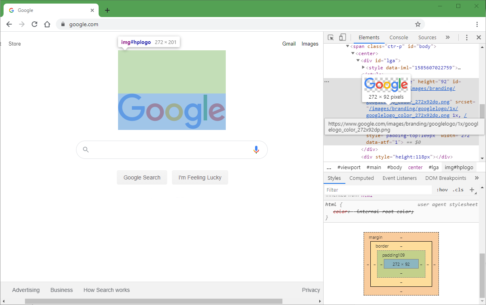
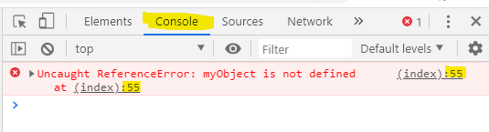
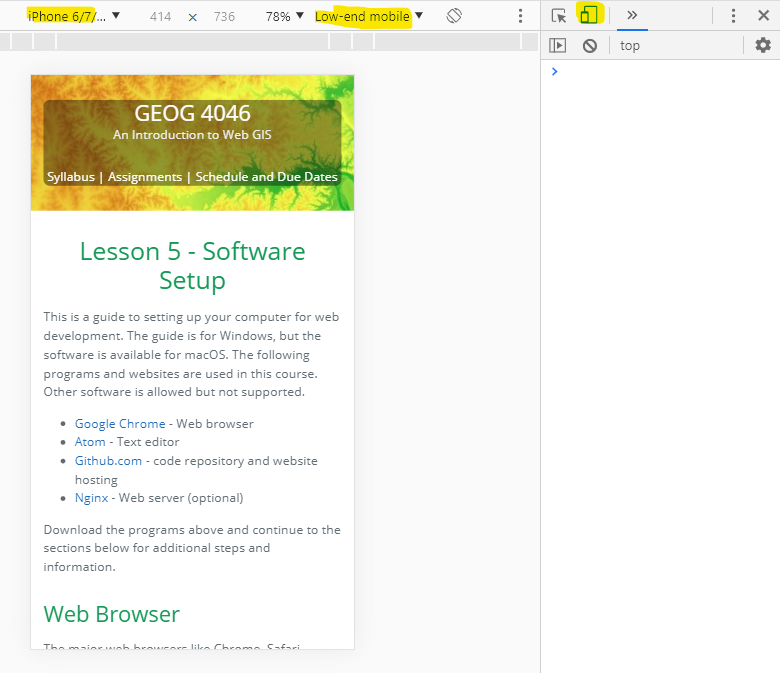
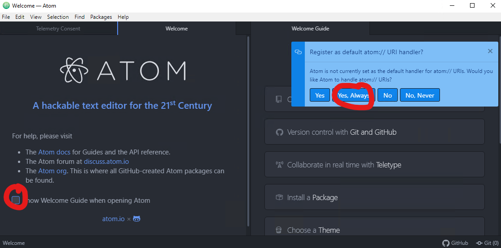
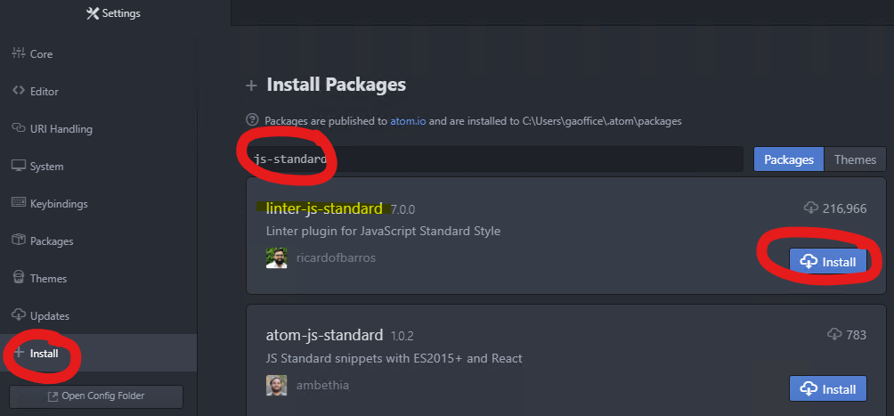
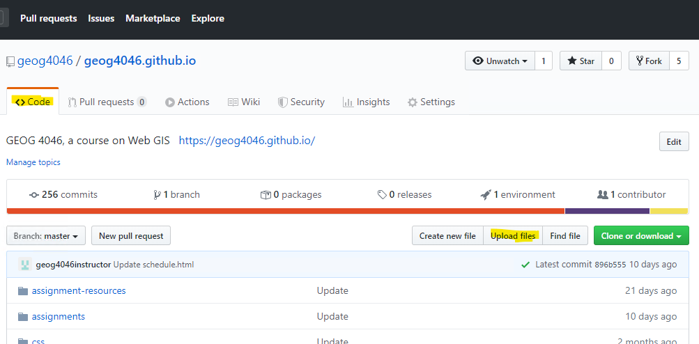
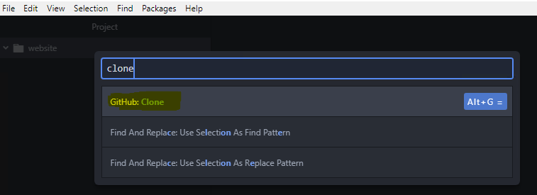
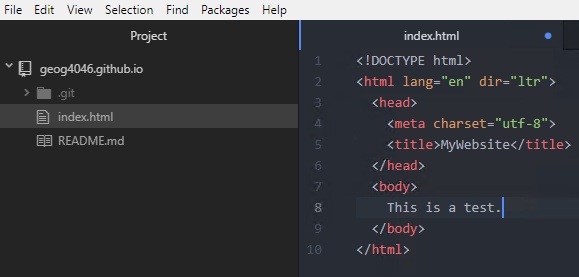
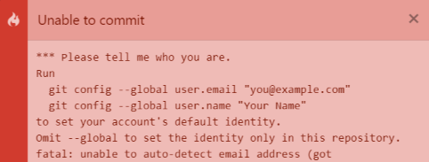
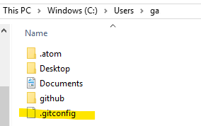

Tutorial 1 Software Setup - Install Development Tools
This is a guide to setting up your computer for web development. The guide is for Windows, but the software is available for macOS. The following programs and websites are used in this course. Other software is allowed but not supported.
- Google Chrome - Web browser
- Atom - Text editor
- Github.com - code repository and website hosting
Download Chrome and Atom, sign up for a Github account, then continue to the sections below for additional steps and information.
Web Browser
The major web browsers like Chrome, Safari, Firefox, and Edge have developer tools included to help you make and test web pages. If the students in this course are representative of the wider browser market, then most of you already use Chrome, which is what this guide covers.
Though we will only use one browser, it is worth noting that browsers might follow different rules for how web pages look and act, so you should become familiar with other browsers and consider testing your sites on a few of them.

Figure 1. The developer tools (F12) in Google Chrome showing the code and other details for the Google logo image.
Chrome shortcuts:
- Press
F12to open the developer tools (Ctrl+Shift+Jif you don’t have a key forF12) - Press
Ctrl+Uto view a page’s source code. This is the original source code downloaded from the URL before any JavaScript has modified it, which might be different from the code you see in theElementstab of the developer tools. - Press
Ctrl+Shift+Nto open an incognito window to test your website–it ignores your history, cache, and logged-in sessions, simulating a public visit to your site. - Press
Shift+Escto open the task manager, which can kill tabs and let you see how much system resources a tab is consuming.
Aside from viewing your sites in a browser, you can also test and debug them. The developer tools in Chrome, for example, let you see the source code, see what CSS rules are applied to each HTML element, view errors, run JavaScript in a console, and monitor network traffic.
When you are testing JavaScript, the console is especially useful for seeing errors in your code. The error messages may not always make sense to a beginner, but it will at least tell you the line number in your code on which the error was encountered, where you can begin investigating what went wrong.

Figure 2. The console in the browser developer tools can help debug. In this screenshot, the page contained an error on line number 55, meaning the developer needs to go back to their code in a text editor, look up line number 55, and look for mistakes.
To preview your site on mobile, the developer tools can simulate different device sizes and Internet speeds.

Figure 3. The browser developer tools have a device toolbar to simulate using your website on difference phones and tablets at different Internet speeds.
The developer tools contain many more features, documented under Chrome DevTools.
Text Editor
Atom is a text editor, meaning you can use it to create or modify the kinds of files used to write HTML, CSS, and JavaScript. Atom can also transfer web page files from your computer to Github.com, which is what we will use to host our websites in this class.

Figure 4. It is recommended to set the options in this screenshot to stop these things from showing every time you start Atom.
After installing and starting Atom for the first time, here are some recommended settings:
- Click
View>Toggle Tree Viewto show files and folders. - Click
File>Settings:System> Check the boxes for bothShow in...optionsInstall> Search for and install the package called “linter-js-standard”. Click yes to install dependencies.

Figure 5. The linter-js-standard package will help make sure your code follows best practices.
That are many other settings and packages that you can employ to fit your preferences.
Website
Make an account on Github. Once you have created an account and logged in, you are ready to create a repository for your website.
- Follow the guide Getting Started with Github Pages
- For the repo name, make sure you name it with your Github username. If your username is
student4046, then your repo should be namedstudent4046.github.io. This will also be the address for your website,https://student4046.github.io.
- For the repo name, make sure you name it with your Github username. If your username is
- You can upload web page files into your repo from the repo’s Code page. For example, if you upload a file called
index.html, that will be your homepage at your website URL,https://student4046.github.io.

Figure 6. You can upload files to a repository directly from the Github website, on your repository’s Code page.
Instead of uploading files through the Github website, we can set up Atom to sync with your Github Pages repository.
- Start Atom. Press the key combination
Ctrl+Shift+P, and in the search box type clone, then click the resultGithub: Clone.
 - In the
Clone frombox that you see next, type the URL to your repository (not your website URL). It should be like this but with your username:https://github.com/student4046/student4046.github.io. - Now you should see the name of your repo under
Projectin the left pane of Atom. - Right-click your repo name and choose
New Fileand name itindex.html. - In the text editing pane (where you can type), type
htmland press Enter when the autocomplete box pops up. Autocomplete will insert some basic HTML into your page. - Enter some text between the
titletags and some more text in thebodythen save the file.- Note: a file with unsaved changes will have a blue dot on its tab.

- Note: a file with unsaved changes will have a blue dot on its tab.
- At the bottom right of Atom, click
Github. The Github tab will open to allow you to sign into Github.com. Click theLoginbutton.- Note: if the Github tab is blank, restart Atom.
- In your browser where you are signed into Github already, go to http://github.atom.io/login, sign in, and click
Authorize Atom. This will give you a token that you need to copy and paste into Atom on the Github tab. Then you can clickLog in.
The following steps will need to be repeated each time you sync Atom with Github, i.e., each time you make changes to your web page files and upload them to Github.
- At the bottom right of Atom, click
Git. UnderUnstaged Changesyou should see yourindex.html, waiting to be uploaded to your Github website. - Click
Stage All. - Enter a Commit Message.
- Click
Commit to master. - At the bottom right of Atom, click
Push. - Now when you go to your website URL, e.g.,
https://student4046.github.io, you will see the web page you just uploaded (although it could take a few minutes for the update to appear).
If you see an error when you try to commit, download this .gitconfig file, unzip it, and copy .gitconfig to your Windows user folder, e.g., C:\Users\student4046. The file name .gitconfig begins with a period.


Figure 7. This commit error can be fixed by adding a .gitconfig file to your Windows user folder. The file must contain a username and email.
Previewing a web page
There are different ways to preview a website before publishing it on the web. The simplest way is to use your browser to open an HTML file on your computer, but this can run into limitations in different scenarios. A more realistic method is to run a web server on your computer. This section describes the use of nginx, a free web server.
- On Windows, download nginx: nginx-1.17.9.zip, or go to the downloads page
- Unzip the downloaded file into a folder called
nginx-1.17.9(or any name you choose). - In that folder, double-click nginx.exe to start the web server application.
- Copy your web page files into the
htmlfolder. - In a browser, you should be able to go to http://localhost to preview your site.
-
You can change the folder that nginx uses for web page files to match your repository folder, for example.
In yournginx-1.17.9folder, openconf/nginx.confin a text editor. Look for the line below and change therootfolder to your own. Note the forward slashes.location / { root c:/users/student/github/student4046.github.io; index index.html index.htm; }Stop nginx.exe in the Windows Task Manager and run nginx.exe again, then test your web page in a browser, again at http://localhost. Or see the nginx docs for commands to stop, restart, etc.